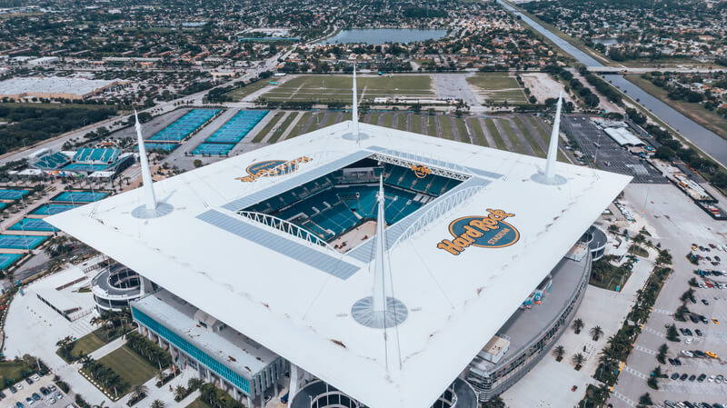
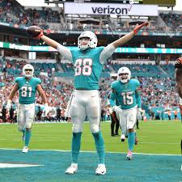

Miami Dolphins 
Történet:
A csapat alakításának gondolata Joseph Robbie minneapolisi ügyvéd fejében fogant meg, aki Danny Thomas színész üzlettársával 1965 tavaszán, Miami polgármesterével való egyeztetést követően adta be kérelmét. Az indítvány találkozott az AFL bővítési terveivel, és a testület engedélyezte a csapatalakítást, amit az AFL Eastern csoportjába sorolt be. Az Orange Bowl nevű stadiont (a Miami Hurricanes egyetemi csapat otthonát) a város biztosította, a „Dolphins” nevet a szurkolók szavazták meg. A csapat az első mérkőzését 1966. szeptember 2-án játszotta az Oakland Raiders ellen, ahol a jó kezdés ellenére is kikaptak 24–13-ra. Folyamatosan érkeztek a csapathoz a meghatározó játékosok: Bob Griese irányító, majd a magyar származású Larry Csonka és Jim Kiick futó, aztán Larry Little guard és Mercury Morris futó, és végül, 1970-ben, az addig a Baltimore Coltsnál (a későbbi Indianapolis Coltsnál) dolgozó, szintén magyar származású Don Shula vezetőedző is megérkezett. A csapat ezt követően remek szezonokat produkált, ám ezt a formát nem tudták sokáig tartani így a mai napig elég válzozó eredményeket érnek el.
Eredmények:
1972-ben és 73-ban is super bowl győzelmet ünnepelhettek. Tizenháromszór jutottak ki elsőként az AFC East csoportból, de mindössze ötször az összevont AFC csoportból.
Stadion:
1966-tól 86-ig az előbb említett Miami Orange Bowl-ban várták ellenfeleiket, azonban 1986-ban megépítették a saját stadionjukat a Hard Rock jóvoltából így az épület is azt a nevet kapta, hogy Hard Rock Dolphins Stadium.
Hard Rock Stadium:
Kicsivel több mint 65ezer ember befogadására képes, de a legtöbb látogatója több mit 80ezer ember volt 2013-ban. Az építési költésge több mint 115 millió dollár volt.
 